515220煤炭ETF后期走势
时间: 2024-01-04 12：27--风生水起
干支: 癸卯年甲子月丁卯日 (旬空: 戌亥 )
天风姤 泽风大过(游魂)
青龙 ▅▅▅▅▅ 父母戌土 Ｏ→ ▅▅ ▅▅ 父母未土
玄武 ▅▅▅▅▅ 兄弟申金 ▅▅▅▅▅ 兄弟酉金
白虎 ▅▅▅▅▅ 官鬼午火 应 ▅▅▅▅▅ 子孙亥水 世
腾蛇 ▅▅▅▅▅ 兄弟酉金 ▅▅▅▅▅ 兄弟酉金
勾陈 妻财寅木▅▅▅▅▅ 子孙亥水 ▅▅▅▅▅ 子孙亥水
朱雀 ▅▅ ▅▅ 父母丑土 世 ▅▅ ▅▅ 父母丑土 应
上九：姤 其角，吝，无咎。
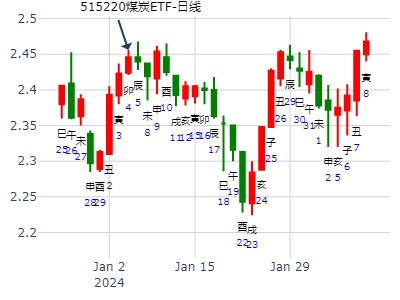
测002017东信和平在2019年走势
公历起卦时间：2019年2月17日10时47分 (手工指定)
干支：己亥年 丙寅月 乙酉日 辛巳时 （日空：午未）
神煞：驿马－亥 桃花－午 日禄－卯 贵人－子，申
乾宫：天风姤 震宫：泽风大过 (游魂)
六神 伏神 本 卦 变 卦
玄武 父母壬戌土 ▅▅▅▅▅ ○→ 父母丁未土 ▅▅ ▅▅
白虎 兄弟壬申金 ▅▅▅▅▅ 兄弟丁酉金 ▅▅▅▅▅
腾蛇 官鬼壬午火 ▅▅▅▅▅ 应 子孙丁亥水 ▅▅▅▅▅ 世
勾陈 兄弟辛酉金 ▅▅▅▅▅ 兄弟辛酉金 ▅▅▅▅▅
朱雀 妻财甲寅木 子孙辛亥水 ▅▅▅▅▅ 子孙辛亥水 ▅▅▅▅▅
青龙 父母辛丑土 ▅▅ ▅▅ 世 父母辛丑土 ▅▅ ▅▅ 应
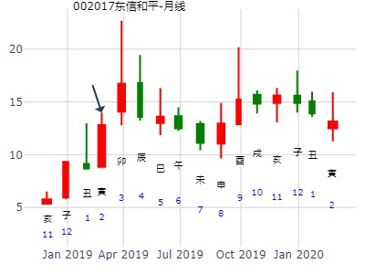
占事：3月20日甲子日601628中国人寿与上日收盘对比涨跌！
起卦方式：手动摇卦
公历时间：2009年3月19日20时56分 星期四
干支：己丑年 丁卯月 癸亥日 壬戌时 (旬空：子丑)
乾宫：天风姤 震宫：泽风大过（游魂）
白虎 ▅▅▅▅▅ 父母壬戌土 ○→ ▅▅ ▅▅ 父母丁未土
螣蛇 ▅▅▅▅▅ 兄弟壬申金 ▅▅▅▅▅ 兄弟丁酉金
勾陈 ▅▅▅▅▅ 官鬼壬午火 应 ▅▅▅▅▅ 子孙丁亥水 世
朱雀 ▅▅▅▅▅ 兄弟辛酉金 ▅▅▅▅▅ 兄弟辛酉金
青龙 妻财甲寅木 ▅▅▅▅▅ 子孙辛亥水 ▅▅▅▅▅ 子孙辛亥水
玄武 ▅▅ ▅▅ 父母辛丑土 世 ▅▅ ▅▅ 父母辛丑土 应
财伏子下，临青龙！
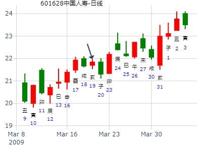
主帖标题: 2011年3月1-31日上海大盘
公历时间：2011年3月1日6时25分
干支：辛卯年 庚寅月 乙卯日 己卯时
旬空：午未 午未 子丑 申酉
乾宫：天风姤 震宫：泽风大过（游魂）
玄武 ▄▄▄▄▄ 父母壬戌土 O-> ▄▄ ▄▄ 父母丁未土
白虎 ▄▄▄▄▄ 兄弟壬申金 ▄▄▄▄▄ 兄弟丁酉金
螣蛇 ▄▄▄▄▄ 官鬼壬午火 应 ▄▄▄▄▄ 子孙丁亥水 世
勾陈 ▄▄▄▄▄ 兄弟辛酉金 ▄▄▄▄▄ 兄弟辛酉金
朱雀 妻财甲寅木 ▄▄▄▄▄ 子孙辛亥水 ▄▄▄▄▄ 子孙辛亥水
青龙 ▄▄ ▄▄ 父母辛丑土 世 ▄▄ ▄▄ 父母辛丑土 应
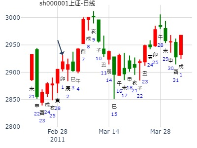
主帖标题: 2013.04.01--03 A趋势
公历起卦时间：2013年3月24日22时
干支：癸巳年 乙卯月 己丑日 （日空：午未）
乾宫：天风姤 震宫：泽风大过 (游魂)
勾陈 父母壬戌土 ▅▅▅▅▅ ○→ 父母丁未土 ▅▅ ▅▅
朱雀 兄弟壬申金 ▅▅▅▅▅ 兄弟丁酉金 ▅▅▅▅▅
青龙 官鬼壬午火 ▅▅▅▅▅ 应 子孙丁亥水 ▅▅▅▅▅ 世
玄武 兄弟辛酉金 ▅▅▅▅▅ 兄弟辛酉金 ▅▅▅▅▅
白虎 妻财甲寅木 子孙辛亥水 ▅▅▅▅▅ 子孙辛亥水 ▅▅▅▅▅
腾蛇 父母辛丑土 ▅▅ ▅▅ 世 父母辛丑土 ▅▅ ▅▅ 应
注意： 世应皆旺，但此卦见顶。

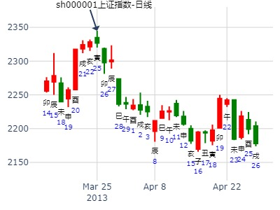
600764中电广通
占问：4月12日周四600764做多可以胜出吗？
起卦方式：手动摇卦 公历时间：2007年4月12日0时50分 星期四
干支：丁亥年 甲辰月 丙子日 戊子时 (旬空：申酉)
乾宫：天风姤 震宫：泽风大过（游魂）
青龙 ▅▅▅▅▅ 父母壬戌土 ○→ ▅▅ ▅▅ 父母丁未土
玄武 ▅▅▅▅▅ 兄弟壬申金 ▅▅▅▅▅ 兄弟丁酉金
白虎 ▅▅▅▅▅ 官鬼壬午火 应 ▅▅▅▅▅ 子孙丁亥水 世
螣蛇 ▅▅▅▅▅ 兄弟辛酉金 ▅▅▅▅▅ 兄弟辛酉金
勾陈 妻财甲寅木 ▅▅▅▅▅ 子孙辛亥水 ▅▅▅▅▅ 子孙辛亥水
朱雀 ▅▅ ▅▅ 父母辛丑土 世 ▅▅ ▅▅ 父母辛丑土 应
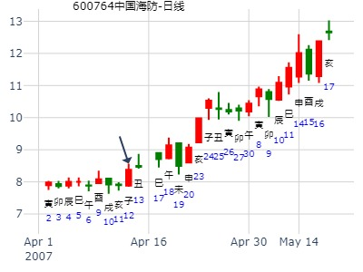
此卦大涨。
主帖标题: 六爻预测14日大盘行情
公历起卦时间：2011年4月14日9时30分 (手工指定)
干支：辛卯年 壬辰月 己亥日 己巳时 （日空：辰巳）
神煞：驿马－巳 桃花－子 日禄－午 贵人－子，申
乾宫：天风姤 震宫：泽风大过 (游魂)
勾陈 父母壬戌土 ▅▅▅▅▅ ○→ 父母丁未土 ▅▅ ▅▅
朱雀 兄弟壬申金 ▅▅▅▅▅ 兄弟丁酉金 ▅▅▅▅▅
青龙 官鬼壬午火 ▅▅▅▅▅ 应 子孙丁亥水 ▅▅▅▅▅ 世
玄武 兄弟辛酉金 ▅▅▅▅▅ 兄弟辛酉金 ▅▅▅▅▅
白虎 妻财甲寅木 子孙辛亥水 ▅▅▅▅▅ 子孙辛亥水 ▅▅▅▅▅
腾蛇 父母辛丑土 ▅▅ ▅▅ 世 父母辛丑土 ▅▅ ▅▅ 应
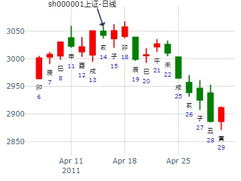
六爻见顶。
主帖标题: 2月27日-3月2日大盘涨跌卦
姤之大过，父化退戌化未。4月第3周。 见顶
时间: 2016-04-11
干支: 丙申年壬辰月癸亥日 (旬空: 子丑 )
天风姤 泽风大过(游魂)
六神 伏神 本 卦 变 卦
白虎 ▅▅▅▅▅ 父母戌土 Ｏ→ ▅▅ ▅▅ 父母未土
腾蛇 ▅▅▅▅▅ 兄弟申金 ▅▅▅▅▅ 兄弟酉金
勾陈 ▅▅▅▅▅ 官鬼午火 应 ▅▅▅▅▅ 子孙亥水 世
朱雀 ▅▅▅▅▅ 兄弟酉金 ▅▅▅▅▅ 兄弟酉金
青龙 妻财寅木▅▅▅▅▅ 子孙亥水 ▅▅▅▅▅ 子孙亥水
玄武 ▅▅ ▅▅ 父母丑土 世 ▅▅ ▅▅ 父母丑土 应
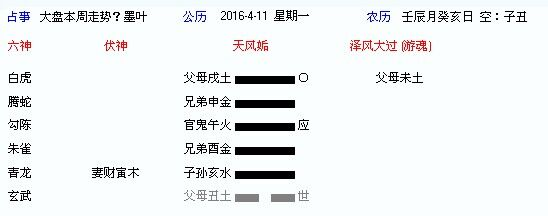
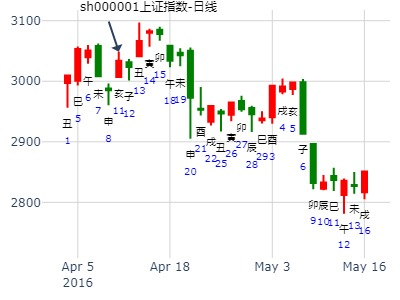
主帖标题: 2015乙未年在何月日為最高點。 见大顶。
姓 名：上海 占问事情：占上海股市何時會是最高點
起卦方式：手工指定
公历时间：2015年6月20日23时39分
干 支：乙未年 壬午月 戊辰日 壬子时（戌亥空）
乾宫：天风姤 震宫：泽风大过（游魂）
朱雀 ▄▄▄▄▄ 父母壬戌土 ○-> ▄▄ ▄▄ 父母丁未土
青龙 ▄▄▄▄▄ 兄弟壬申金 ▄▄▄▄▄ 兄弟丁酉金
玄武 ▄▄▄▄▄ 官鬼壬午火 应 ▄▄▄▄▄ 子孙丁亥水 世
白虎 ▄▄▄▄▄ 兄弟辛酉金 ▄▄▄▄▄ 兄弟辛酉金
螣蛇 妻财甲寅木 ▄▄▄▄▄ 子孙辛亥水 ▄▄▄▄▄ 子孙辛亥水
勾陈 ▄▄ ▄▄ 父母辛丑土 世 ▄▄ ▄▄ 父母辛丑土 应
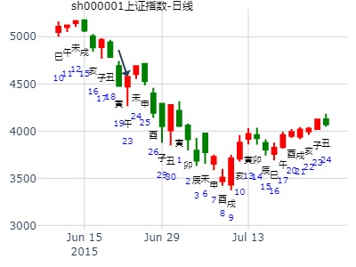
主帖标题: 6.4上证（卦象贴反，改正）
公历起卦时间：2020年6月3日18时1分 (手工指定)
干支：庚子年 辛巳月 丁丑日 己酉时 （日空：申酉）
乾宫：天风姤 震宫：泽风大过 (游魂)
六神 伏神 本 卦 变 卦
青龙 父母壬戌土 ▅▅▅▅▅ ○→ 父母丁未土 ▅▅ ▅▅
玄武 兄弟壬申金 ▅▅▅▅▅ 兄弟丁酉金 ▅▅▅▅▅
白虎 官鬼壬午火 ▅▅▅▅▅ 应 子孙丁亥水 ▅▅▅▅▅ 世
螣蛇 兄弟辛酉金 ▅▅▅▅▅ 兄弟辛酉金 ▅▅▅▅▅
勾陈 妻财甲寅木 子孙辛亥水 ▅▅▅▅▅ 子孙辛亥水 ▅▅▅▅▅
朱雀 父母辛丑土 ▅▅ ▅▅ 世 父母辛丑土 ▅▅ ▅▅ 应
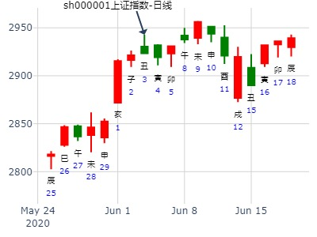
7月大盘周卦，姤之大过.md
时间: 2019-07-15 8：07--大道
干支: 己亥年辛未月癸丑日丙辰时 (旬空: 寅卯 )
天风姤 泽风大过(游魂)
六神 伏神 本 卦 变 卦
白虎 ▅▅▅▅▅ 父母戌土 Ｏ→ ▅▅ ▅▅ 父母未土
腾蛇 ▅▅▅▅▅ 兄弟申金 ▅▅▅▅▅ 兄弟酉金
勾陈 ▅▅▅▅▅ 官鬼午火 应 ▅▅▅▅▅ 子孙亥水 世
朱雀 ▅▅▅▅▅ 兄弟酉金 ▅▅▅▅▅ 兄弟酉金
青龙 妻财寅木▅▅▅▅▅ 子孙亥水 ▅▅▅▅▅ 子孙亥水
玄武 ▅▅ ▅▅ 父母丑土 世 ▅▅ ▅▅ 父母丑土 应
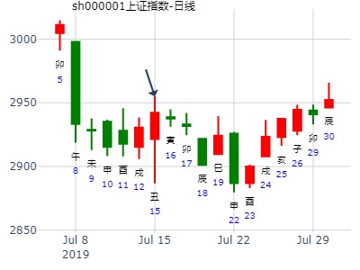
主帖标题: 楼价走势预测，大家都很关心哈。。。
楼主的卦与我的卦信息基本相同，以下是我的卦:
占事: 问地产股下半年走向如何
起卦方式：手工指定 六爻线上排盘系统
公历时间：2009年8月26日22时40分 农历时间：己丑年 七月初七日亥时
干支：己丑年 壬申月 癸卯日 癸亥时
旬空：午未 戌亥 辰巳 子丑
神煞：驿马─巳 桃花─子 日禄─子 贵人─巳，卯
乾宫：天风姤 震宫：泽风大过（游魂）
六神 伏 神 【本 卦】 【变 卦】
白虎 ▄▄▄▄▄ 父母壬戌土 O-> ▄▄ ▄▄ 父母丁未土
螣蛇 ▄▄▄▄▄ 兄弟壬申金 ▄▄▄▄▄ 兄弟丁酉金
勾陈 ▄▄▄▄▄ 官鬼壬午火 应 ▄▄▄▄▄ 子孙丁亥水 世
朱雀 ▄▄▄▄▄ 兄弟辛酉金 ▄▄▄▄▄ 兄弟辛酉金
青龙 妻财甲寅木 ▄▄▄▄▄ 子孙辛亥水 ▄▄▄▄▄ 子孙辛亥水
玄武 ▄▄ ▄▄ 父母辛丑土 世 ▄▄ ▄▄ 父母辛丑土 应
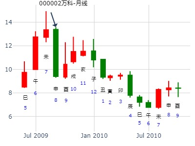
占事：8月20-24日大盘涨跌？
公历起卦时间：2012年8月17日15时3分 (手工指定)
干支：壬辰年 戊申月 庚戌日 甲申时 （日空：寅卯）
神煞：驿马－申 桃花－卯 日禄－申 贵人－丑，未
乾宫：天风姤 震宫：泽风大过 (游魂)
六神 伏神 本 卦 变 卦
腾蛇 父母壬戌土 ▅▅▅▅▅ ○→ 父母丁未土 ▅▅ ▅▅
勾陈 兄弟壬申金 ▅▅▅▅▅ 兄弟丁酉金 ▅▅▅▅▅
朱雀 官鬼壬午火 ▅▅▅▅▅ 应 子孙丁亥水 ▅▅▅▅▅ 世
青龙 兄弟辛酉金 ▅▅▅▅▅ 兄弟辛酉金 ▅▅▅▅▅
玄武 妻财甲寅木 子孙辛亥水 ▅▅▅▅▅ 子孙辛亥水 ▅▅▅▅▅
白虎 父母辛丑土 ▅▅ ▅▅ 世 父母辛丑土 ▅▅ ▅▅ 应
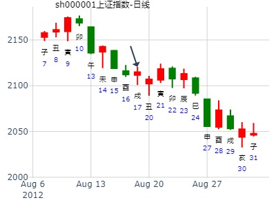
占事：姤之大过，凯恩股份823二周卦。风生水起。伏神透出大涨
时间: 2021-08-23 15：41
干支: 辛丑年丙申月癸卯日 (旬空: 辰巳 )
天风姤 泽风大过(游魂)
六神 伏神 本 卦 变 卦
白虎 ▅▅▅▅▅ 父母戌土 Ｏ→ ▅▅ ▅▅ 父母未土
腾蛇 ▅▅▅▅▅ 兄弟申金 ▅▅▅▅▅ 兄弟酉金
勾陈 ▅▅▅▅▅ 官鬼午火 应 ▅▅▅▅▅ 子孙亥水 世
朱雀 ▅▅▅▅▅ 兄弟酉金 ▅▅▅▅▅ 兄弟酉金
青龙 妻财寅木▅▅▅▅▅ 子孙亥水 ▅▅▅▅▅ 子孙亥水
玄武 ▅▅ ▅▅ 父母丑土 世 ▅▅ ▅▅ 父母丑土 应
寅日妻财透出则大涨。财来克世。又兼克动爻。
亥子日值班时，大跌，可理解为值班则受父母克，也可理解为值班将伏神压住大跌。
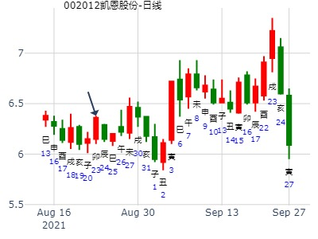
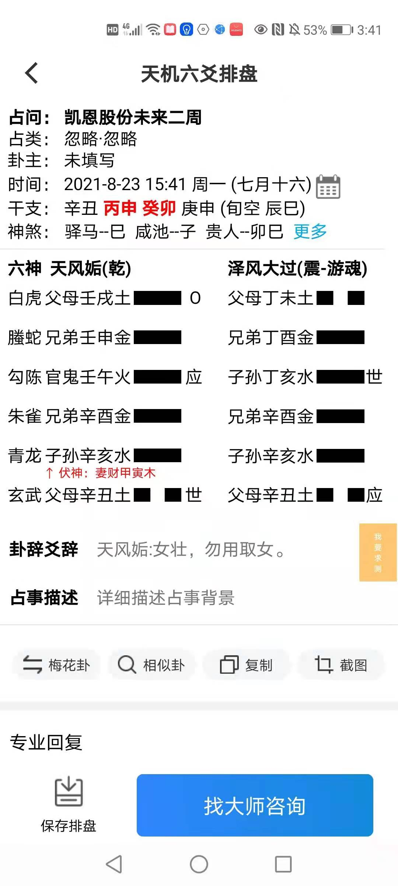
出生年：年 性别：男
占事: 一定会补6月1日的缺口吗？
起卦方式：手工指定 周易天地www.64gua.com六爻线上排盘系统
公历时间：2009年9月3日7时27分 农历时间：己丑年 七月十五日辰时
干支：己丑年 壬申月 辛亥日 壬辰时
旬空：午未 戌亥 寅卯 午未
乾宫：天风姤 震宫：泽风大过（游魂）
六神 伏 神 【本 卦】 【变 卦】
螣蛇 ▄▄▄▄▄ 父母壬戌土 O-> ▄▄ ▄▄ 父母丁未土
勾陈 ▄▄▄▄▄ 兄弟壬申金 ▄▄▄▄▄ 兄弟丁酉金
朱雀 ▄▄▄▄▄ 官鬼壬午火 应 ▄▄▄▄▄ 子孙丁亥水 世
青龙 ▄▄▄▄▄ 兄弟辛酉金 ▄▄▄▄▄ 兄弟辛酉金
玄武 妻财甲寅木 ▄▄▄▄▄ 子孙辛亥水 ▄▄▄▄▄ 子孙辛亥水
白虎 ▄▄ ▄▄ 父母辛丑土 世 ▄▄ ▄▄ 父母辛丑土 应
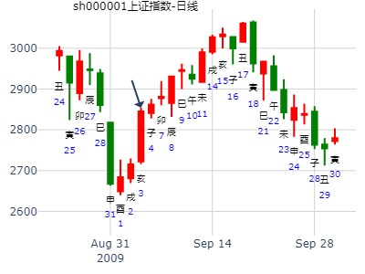
占事：9月20-21日大盘涨跌？
公历时间：2010年9月17日16时29分 星期五
干支：庚寅年 乙酉月 庚午日 甲申时 (旬空：戌亥)
神煞：驿马—申 桃花—卯 日禄—申 贵人—寅，午
乾宫：天风姤 震宫：泽风大过（游魂）
六神 伏 神 【本 卦】 【变 卦】
螣蛇 ▅▅▅▅▅ 父母壬戌土 ○→ ▅▅ ▅▅ 父母丁未土
勾陈 ▅▅▅▅▅ 兄弟壬申金 ▅▅▅▅▅ 兄弟丁酉金
朱雀 ▅▅▅▅▅ 官鬼壬午火 应 ▅▅▅▅▅ 子孙丁亥水 世
青龙 ▅▅▅▅▅ 兄弟辛酉金 ▅▅▅▅▅ 兄弟辛酉金
玄武 妻财甲寅木 ▅▅▅▅▅ 子孙辛亥水 ▅▅▅▅▅ 子孙辛亥水
白虎 ▅▅ ▅▅ 父母辛丑土 世 ▅▅ ▅▅ 父母辛丑土 应
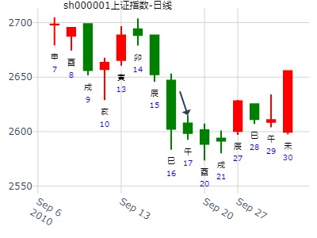
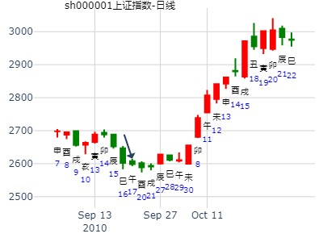
主帖标题: 9.18上证
公历起卦时间：2020年9月17日18时19分 (手工指定)
干支：庚子年 乙酉月 癸亥日 辛酉时 （日空：子丑）
神煞：驿马－巳 桃花－子 日禄－子 贵人－卯，巳
乾宫：天风姤 震宫：泽风大过 (游魂)
六神 伏神 本 卦 变 卦
白虎 父母壬戌土 ▅▅▅▅▅ ○→ 父母丁未土 ▅▅ ▅▅
螣蛇 兄弟壬申金 ▅▅▅▅▅ 兄弟丁酉金 ▅▅▅▅▅
勾陈 官鬼壬午火 ▅▅▅▅▅ 应 子孙丁亥水 ▅▅▅▅▅ 世
朱雀 兄弟辛酉金 ▅▅▅▅▅ 兄弟辛酉金 ▅▅▅▅▅
青龙妻财甲寅木 子孙辛亥水 ▅▅▅▅▅ 子孙辛亥水 ▅▅▅▅▅
玄武 父母辛丑土 ▅▅ ▅▅ 世 父母辛丑土 ▅▅ ▅▅ 应
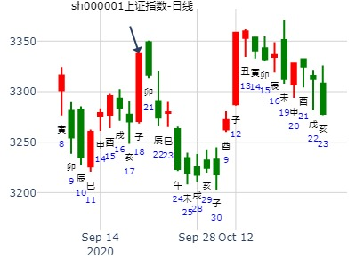
主帖标题: 主题：9月11日黄金的走势 1249.6
主帖标题: 9.18上证
公历起卦时间：2020年9月17日18时19分 (手工指定)
干支：庚子年 乙酉月 癸亥日 辛酉时 （日空：子丑）
神煞：驿马－巳 桃花－子 日禄－子 贵人－卯，巳
乾宫：天风姤 震宫：泽风大过 (游魂)
六神 伏神 本 卦 变 卦
白虎 父母壬戌土 ▅▅▅▅▅ ○→ 父母丁未土 ▅▅ ▅▅
螣蛇 兄弟壬申金 ▅▅▅▅▅ 兄弟丁酉金 ▅▅▅▅▅
勾陈 官鬼壬午火 ▅▅▅▅▅ 应 子孙丁亥水 ▅▅▅▅▅ 世
朱雀 兄弟辛酉金 ▅▅▅▅▅ 兄弟辛酉金 ▅▅▅▅▅
青龙 妻财甲寅木 子孙辛亥水 ▅▅▅▅▅ 子孙辛亥水 ▅▅▅▅▅
玄武 父母辛丑土 ▅▅ ▅▅ 世 父母辛丑土 ▅▅ ▅▅ 应
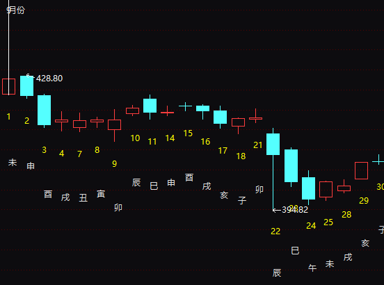

主帖标题: 9.21上证
公历起卦时间：2020年9月18日22时36分 (手工指定)
干支：庚子年 乙酉月 甲子日 乙亥时 （日空：戌亥）
神煞：驿马－寅 桃花－酉 日禄－寅 贵人－丑，未
乾宫：天风姤 震宫：泽风大过 (游魂)
六神 伏神 本 卦 变 卦
玄武 父母壬戌土 ▅▅▅▅▅ ○→ 父母丁未土 ▅▅ ▅▅
白虎 兄弟壬申金 ▅▅▅▅▅ 兄弟丁酉金 ▅▅▅▅▅
螣蛇 官鬼壬午火 ▅▅▅▅▅ 应 子孙丁亥水 ▅▅▅▅▅ 世
勾陈 兄弟辛酉金 ▅▅▅▅▅ 兄弟辛酉金 ▅▅▅▅▅
朱雀 妻财甲寅木 子孙辛亥水 ▅▅▅▅▅ 子孙辛亥水 ▅▅▅▅▅
青龙 父母辛丑土 ▅▅ ▅▅ 世 父母辛丑土 ▅▅ ▅▅ 应
《周易》——天风诟 乾上巽下
姤之大过，000545金浦钛业917周卦
公元：2021年9月17日21时37分 （64gua:山水也消失）
干支：辛丑年 丁酉月 戊辰日 癸亥时 (戌亥)
姤 卦 乾 卦 大过卦 复 卦 夬 卦
▆▆▆ ☉ ▆▆▆ ▆ ▆ ▆ ▆ ▆ ▆
用 ▆▆▆ ▆▆▆ ▆▆▆ ▆ ▆ ▆▆▆
▆▆▆ ▆▆▆ ▆▆▆ ▆ ▆ ▆▆▆
▆▆▆ ▆▆▆ ▆▆▆ ▆ ▆ ▆▆▆
体 ▆▆▆ ▆▆▆ ▆▆▆ ▆ ▆ ▆▆▆
▆ ▆ ▆▆▆ ▆ ▆ ▆▆▆ ▆▆▆
[本卦] [互卦] [变卦] [错卦] [综卦]
公历起卦时间：2021年9月17日9时22分 (手工指定)
干支：辛丑年 丁酉月 戊辰日 丁巳时 （日空：戌亥）
乾宫：天风姤 震宫：泽风大过 (游魂)
六神 伏神 本 卦 变 卦
朱雀 父母壬戌土 ▅▅▅▅▅ ○→ 父母丁未土 ▅▅ ▅▅
青龙 兄弟壬申金 ▅▅▅▅▅ 兄弟丁酉金 ▅▅▅▅▅
玄武 官鬼壬午火 ▅▅▅▅▅ 应 子孙丁亥水 ▅▅▅▅▅ 世
白虎 兄弟辛酉金 ▅▅▅▅▅ 兄弟辛酉金 ▅▅▅▅▅
螣蛇 妻财甲寅木 子孙辛亥水 ▅▅▅▅▅ 子孙辛亥水 ▅▅▅▅▅
勾陈 父母辛丑土 ▅▅ ▅▅ 世 父母辛丑土 ▅▅ ▅▅ 应
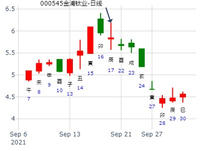
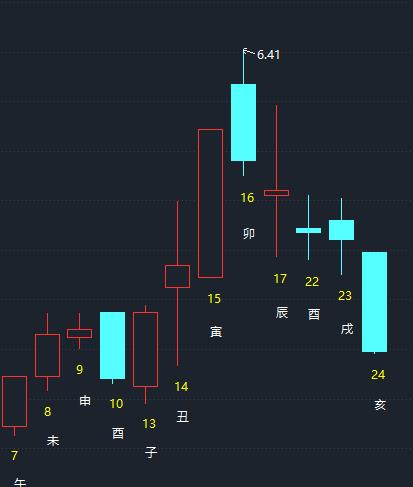
10月10日黄金的走势 1224-10月10日黄金的走势 1224
手工指定 六爻排盘 www.d8soft.com
驿马-申 桃花-卯 日禄-寅 贵人-丑未
干支：甲午年 甲戌月 甲寅日 戊辰时 (子丑空)
乾宫(金):天风姤 震宫(木):泽风大过(游魂)
六神 伏神 【本 卦】 【变 卦】
玄武 父母壬戌土▅▅▅▅▅ O→父母丁未土▅▅ ▅▅
白虎 兄弟壬申金▅▅▅▅▅ 兄弟丁酉金▅▅▅▅▅
螣蛇 官鬼壬午火▅▅▅▅▅应 子孙丁亥水▅▅▅▅▅世
勾陈 兄弟辛酉金▅▅▅▅▅ 兄弟辛酉金▅▅▅▅▅
朱雀 妻财甲寅木 子孙辛亥水▅▅▅▅▅ 子孙辛亥水▅▅▅▅▅
青龙 父母辛丑土▅▅ ▅▅世 父母辛丑土▅▅ ▅▅应
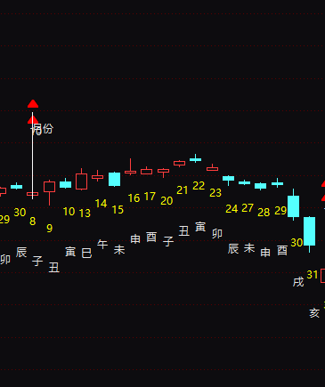
主帖标题: 10.12大盘？
2022年10月11日15时15分
干支：壬寅年 庚戌月 丁酉日 戊申时 （日空：辰巳）
神煞：驿马－亥 桃花－午 日禄－午 贵人－酉，亥
乾宫：天风姤 震宫：泽风大过 (游魂)
六神 伏神 本 卦 变 卦
青龙 父母戌土 ▅▅▅▅▅ ○→ 父母未土 ▅▅ ▅▅
玄武 兄弟申金 ▅▅▅▅▅ 兄弟酉金 ▅▅▅▅▅
白虎 官鬼午火 ▅▅▅▅▅ 应 子孙亥水 ▅▅▅▅▅ 世
螣蛇 兄弟酉金 ▅▅▅▅▅ 兄弟酉金 ▅▅▅▅▅
勾陈 妻财寅木 子孙亥水 ▅▅▅▅▅ 子孙亥水 ▅▅▅▅▅
朱雀 父母丑土 ▅▅ ▅▅ 世 父母丑土 ▅▅ ▅▅ 应
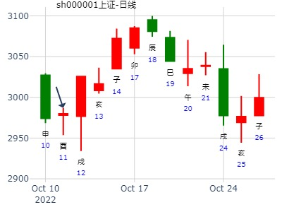
软件ETF到2月底
时间: 2024-10-01
干支: 甲辰年癸酉月戊戌日 (旬空: 辰巳 )
天风姤 泽风大过(游魂)
六神 伏神 本 卦 变 卦
朱雀 ▅▅▅▅▅ 父母戌土 Ｏ→ ▅▅ ▅▅ 父母未土
青龙 ▅▅▅▅▅ 兄弟申金 ▅▅▅▅▅ 兄弟酉金
玄武 ▅▅▅▅▅ 官鬼午火 应 ▅▅▅▅▅ 子孙亥水 世
白虎 ▅▅▅▅▅ 兄弟酉金 ▅▅▅▅▅ 兄弟酉金
腾蛇 妻财寅木▅▅▅▅▅ 子孙亥水 ▅▅▅▅▅ 子孙亥水
勾陈 ▅▅ ▅▅ 父母丑土 世 ▅▅ ▅▅ 父母丑土 应
上九：姤 其角，吝，无咎。
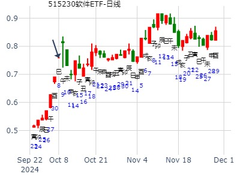
主帖标题: 谷啊之谦啊啊以后大盘走势精准
出生年：年 性别：男 占事: 大盘走势
起卦方式：手动摇卦 周易天地www.64gua.com六爻线上排盘系统
公历时间：2010年11月24日21时30分
干支：庚寅年 丁亥月 戊寅日 癸亥时
旬空：午未 午未 申酉 子丑
神煞：驿马─申 桃花─卯 日禄─巳 贵人─丑，未
乾宫：天风姤 震宫：泽风大过（游魂）
六神 伏 神 【本 卦】 【变 卦】
朱雀 ▄▄▄▄▄ 父母壬戌土 O-> ▄▄ ▄▄ 父母丁未土
青龙 ▄▄▄▄▄ 兄弟壬申金 ▄▄▄▄▄ 兄弟丁酉金
玄武 ▄▄▄▄▄ 官鬼壬午火 应 ▄▄▄▄▄ 子孙丁亥水 世
白虎 ▄▄▄▄▄ 兄弟辛酉金 ▄▄▄▄▄ 兄弟辛酉金
螣蛇 妻财甲寅木 ▄▄▄▄▄ 子孙辛亥水 ▄▄▄▄▄ 子孙辛亥水
勾陈 ▄▄ ▄▄ 父母辛丑土 世 ▄▄ ▄▄ 父母辛丑土 应
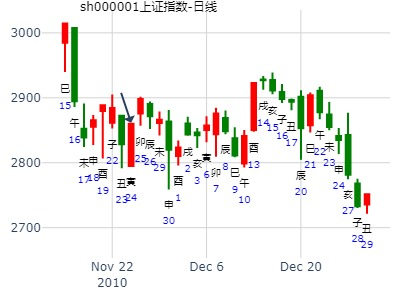
出生年：年 性别：男
占事: 600023 亥月走势
起卦方式：手动摇卦 周易天地www.64gua.com六爻线上排盘系统
公历时间：2014年11月6日21时30分
干支：甲午年 甲戌月 辛巳日 己亥时
旬空：辰巳 申酉 申酉 辰巳
神煞：驿马─亥 桃花─午 日禄─酉 贵人─寅，午
乾宫：天风姤 震宫：泽风大过（游魂）
六神 伏 神 【本 卦】 【变 卦】
螣蛇 ▄▄▄▄▄ 父母壬戌土 O-> ▄▄ ▄▄ 父母丁未土
勾陈 ▄▄▄▄▄ 兄弟壬申金 ▄▄▄▄▄ 兄弟丁酉金
朱雀 ▄▄▄▄▄ 官鬼壬午火 应 ▄▄▄▄▄ 子孙丁亥水 世
青龙 ▄▄▄▄▄ 兄弟辛酉金 ▄▄▄▄▄ 兄弟辛酉金
玄武 妻财甲寅木 ▄▄▄▄▄ 子孙辛亥水 ▄▄▄▄▄ 子孙辛亥水
白虎 ▄▄ ▄▄ 父母辛丑土 世 ▄▄ ▄▄ 父母辛丑土 应
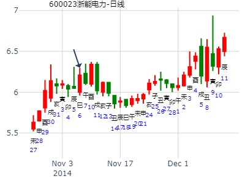
主帖标题: 11.14-18 大盘走势
公历起卦时间：2022年11月11日15时57分 (手工指定)
干支：壬寅年 辛亥月 戊辰日 庚申时 （日空：戌亥）
乾宫：天风姤 震宫：泽风大过 (游魂)
六神 伏神 本 卦 变 卦
朱雀 父母壬戌土 ▅▅▅▅▅ ○→ 父母丁未土 ▅▅ ▅▅
青龙 兄弟壬申金 ▅▅▅▅▅ 兄弟丁酉金 ▅▅▅▅▅
玄武 官鬼壬午火 ▅▅▅▅▅ 应 子孙丁亥水 ▅▅▅▅▅ 世
白虎 兄弟辛酉金 ▅▅▅▅▅ 兄弟辛酉金 ▅▅▅▅▅
螣蛇 妻财甲寅木 子孙辛亥水 ▅▅▅▅▅ 子孙辛亥水 ▅▅▅▅▅
勾陈 父母辛丑土 ▅▅ ▅▅ 世 父母辛丑土 ▅▅ ▅▅ 应
数理周卦，勿当真，仅供参考
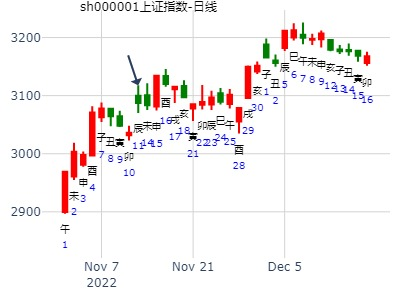
12/12-12/16创业板指399006走势
起卦方式：手动摇卦
中国预测网六爻排盘http://pp.yuceweb.com/6y.asp
公历时间：2022年12月10日9时38分
干 支：壬寅年 壬子月 丁酉日 乙巳时
旬 空：辰巳 寅卯 辰巳 寅卯
神 煞：驿马─亥 桃花─午 日禄─午 贵人─酉，亥
乾宫：天风姤 震宫：泽风大过（游魂）
六神 伏 神 【本 卦】 【变 卦】
青龙 ▄▄▄▄▄ 父母壬戌土 ○ ▄▄ ▄▄ 父母丁未土
玄武 ▄▄▄▄▄ 兄弟壬申金 ▄▄▄▄▄ 兄弟丁酉金
白虎 ▄▄▄▄▄ 官鬼壬午火 应 ▄▄▄▄▄ 子孙丁亥水 世
螣蛇 ▄▄▄▄▄ 兄弟辛酉金 ▄▄▄▄▄ 兄弟辛酉金
勾陈 妻财甲寅木 ▄▄▄▄▄ 子孙辛亥水 ▄▄▄▄▄ 子孙辛亥水
朱雀 ▄▄ ▄▄ 父母辛丑土 世 ▄▄ ▄▄ 父母辛丑土 应
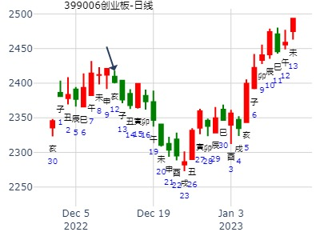